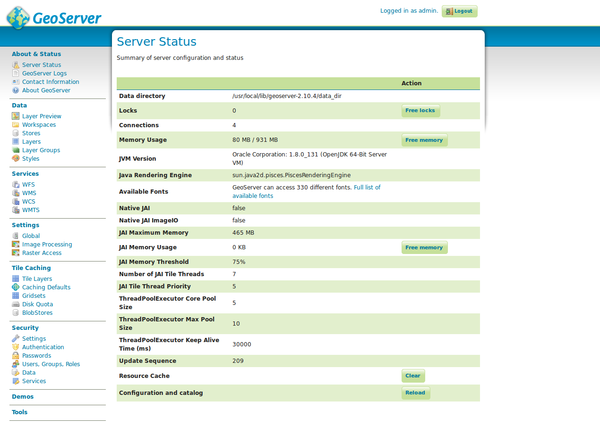

Server
Serverstatus

Unter Serverstatus befinden sich Angaben zum aktuellen Zustand des Kartenservers. Hierzu gehören neben diversen Systemangaben (z.B. verfügbare Schriftarten, verwendete Java-Version oder aktuell verwendetem Arbeitsspeicher) Installationsspezifika wie das aktuell genutzte Datenverzeichnis. Die Statusseite ist die erste Anlaufstelle, falls die Performance eines Layers nicht der üblichen Geschwindigkeit entspricht oder Änderungen auf Dateiebene des GeoServers vorgenommen wurden (z.B. Installation neuer Schriftarten, Änderungen in Konfigurationsdateien). Zwar sind Änderungen auf Dateiebene nicht zu empfehlen, lassen sich jedoch ggf. nicht verhindern, wenn z.B. die Konfiguration eines anderen GeoServers übernommen werden soll. In diesem Fall muss die Konfiguration über den Button Neu laden unter Konfiguration und Katalog betätigt werden. Reagiert die Benutzeroberfläche sehr träge oder erscheinen Layer nur sehr langsam in der Applikation kann es oft hilfreich sein, den Ressourcen Cache über den Button Leeren und/oder den verwendeten Arbeitsspeicher über Arbeitsspeicher freigeben freizugeben.
Protokollierung

Bei jeglichen Fehlern, die sich eindeutig dem GeoServer zuordnen lassen (wie z.B.
keine oder eine falsche Antwort eines Kartendienstes) ist das Protokoll die erste
Anlaufstelle. Das GeoServer Protokoll lässt sich dabei entweder direkt über die
GUI (s. obige Abbildung) oder direkt vom Dateisystem (/usr/local/lib/geoserver-2.21.0/logs/geoserver.log)
aufrufen. Ist die Fehlerausgabe zu kurz, kann die Länge der Ausgabe über das Feld
Maximale Anzahl von Zeilen in der Konsole gesteuert werden. Die Fehlerausgabe von
Java/vom GeoServer ist in aller Regel sehr ausführlich, sodass die Fehler verursachende
Komponente schnell ausfindig gemacht werden kann. Schwerwiegende Fehler werden
dabei meist mit dem Kürzel ERROR dargestellt. Beispielsweise würde sich die Fehlerausgabe
2014-10-06 09:16:33,492 ERROR [geoserver.wms] - Getting feature source: featureType: GEOSERVER:EXAMPLE_LAYER does not have a properly configured datastore
beim Abrufen der Datenquelle für einen Layer auf einen unsauber konfigurierten Datenspeicher zurückführen lassen. Dies kann entweder tatsächlich einer fehlerhaften Konfiguration oder z.B. einem Ausfall der Datenbank geschuldet sein.
Hinweis: Es existieren mehrere Protokollmodi, die eine unterschiedlich empfindliche Ausgabe erzeugen. Nähere Informationen hierzu siehe Kapitel Einstellungen.
Kontaktangaben

Die obige Abbildung zeigt die Möglichkeiten zur Angabe von Kontaktdaten im GeoServer, die in erster Linie für die Kartendienste des Servers relevant sind, da diese im GetCapabilities Dokument erscheinen.
Aufgabe:
- Rufen Sie das
GetCapabilitiesDokument des GeoServers auf. Klicken Sie hierzu auf der Startseite rechts unterService Capabilitiesauf WMS -> 1.3.0. Bitte geben Sie nun unterContact informationIhre Kontaktinformationen an. Rufen Sie anschließend nochmals dasGetCapabilitiesauf. Was fällt Ihnen auf?